StableSteering: Preference-Guided Local Search for Iterative Text-to-Image Refinement
Abstract
Iterative refinement is central to practical text-to-image use, yet current interfaces still rely heavily on prompt rewriting even when users can more easily judge relative visual progress than verbalize the next correction. This paper studies refinement as a preference-guided local-search problem performed at inference time around a fixed generator. StableSteering represents a session by a persistent prompt together with a low-dimensional steering state that is updated through repeated candidate proposal, comparative feedback, preference aggregation, and state revision. This decomposition isolates four methodological axes within one common loop: steering-direction computation, proposal geometry, preference modeling, and incumbent management. Evaluation combines representative archived trajectories with controlled hidden-target studies built from real images and caption-based initialization. In a repeated multi-metric oracle study comprising 9 runs, 90 rounds, and 360 candidate rows, mean best-candidate similarity increases from 0.828 to 0.881 under CLIP and from 0.452 to 0.595 under DINOv2. Controlled slices further show that steering-direction computation is itself a meaningful design axis, broader proposal coverage and richer preference aggregation alter recovery behavior, and incumbent policy largely determines late-round stagnation. A budget-matched comparison against prompt-only and no-update baselines further clarifies the framework's role: it distinguishes framework-level claims from policy-level performance and identifies update efficiency, proposal diversity, and incumbent management as the principal levers for future improvement.
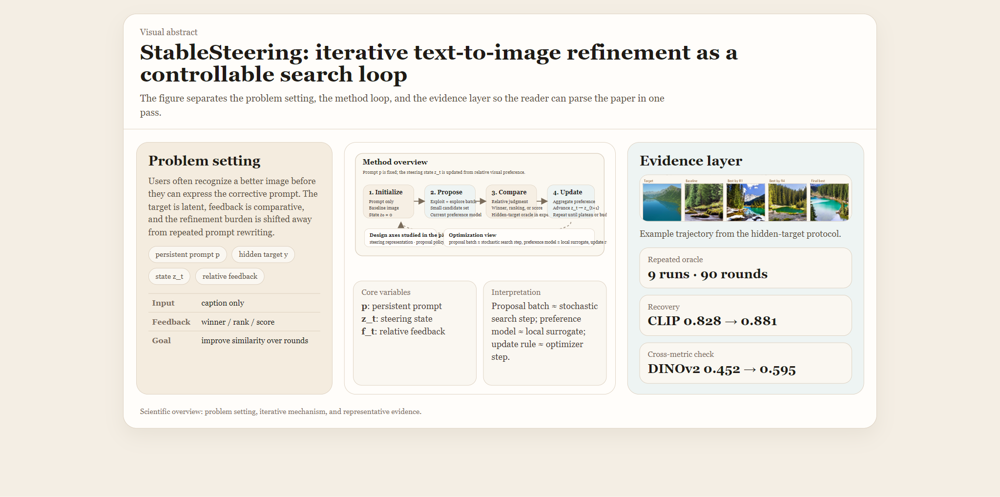
1. Introduction
Text-to-image generation has become a powerful interface for visual creation, but it remains a weak interface for visual refinement. In practice, users often recognize that one image is closer to their intent than another while still lacking the vocabulary needed to write the prompt that would produce the desired correction. This problem matters because real use is rarely one-shot. Product iteration, design exploration, scientific illustration, and creative authoring all involve repeated refinement under partially specified intent. Yet current workflows still place most of the refinement burden on prompt editing, manual trial-and-error, or expensive model-level adaptation.
That burden is not only inconvenient; it reflects a deeper mismatch between the supervision users can provide and the supervision the system expects. Prompt engineering is a real skill rather than a trivial interface operation, and prompt revision can be especially difficult for novice users or for subtle visual changes (Oppenlaender et al., 2023; Wang et al., 2024a). Prompt-optimization methods can improve prompts offline, but they still operate in language space and therefore inherit the difficulty of expressing the right correction verbally (Wang et al., 2024b). Interactive systems can help with prompting and editing, but they often combine several intervention mechanisms at once, which makes the refinement process harder to study as a scientific object in its own right (Wang et al., 2024a).
This paper takes a different perspective. Instead of treating iterative refinement as repeated prompt rewriting, it treats it as an inference-time control problem over a fixed generator. The prompt remains persistent. A session-level steering state captures the current local direction of search. Each round then performs four operations: it constructs prompt-conditioned control from the current state, proposes a small exploit-explore candidate batch, elicits preference information over that batch, and updates the state for the next round. The user is therefore asked to provide comparative visual information rather than a fully specified textual correction.
An especially useful way to view this loop is as an optimization process without direct gradients. The steering state is the current iterate. The proposal policy plays the role of a stochastic sampler. Human or oracle feedback supplies noisy supervision. The preference model converts that supervision into a local surrogate direction, and the update rule advances the next state. Incumbent preservation, smoothing, and stagnation control act like optimizer-side memory and trust-region mechanisms. The analogy is not exact because the system lacks access to a differentiable ground-truth objective, but it is scientifically productive because it focuses attention on proposal geometry, surrogate quality, and update memory rather than on prompt rewriting alone.
This framing makes the problem both difficult and important. It is difficult because the objective is latent, the feedback is comparative and noisy, the search space is only indirectly defined through a text-conditioned diffusion model, and later rounds can plateau even when visually plausible challengers remain. It is important because the same refinement bottleneck appears across many practical text-to-image workflows, and because it occupies a middle ground between prompt engineering and model fine-tuning that is not yet well characterized.
The central claim of the paper is therefore methodological rather than architectural. StableSteering contributes a framework in which iterative refinement can be decomposed into four inference-time design axes: steering-direction computation, candidate-sampling policy, preference-aggregation model, and incumbent-management policy. This decomposition makes it possible to compare concrete strategies within one shared loop rather than across incomparable end-to-end systems.
The paper makes four contributions.
- It formulates iterative text-to-image refinement as a preference-guided inference-time search process around a persistent prompt and an explicit steering state.
- It isolates steering-direction computation, proposal geometry, preference modeling, and incumbent handling as separable methodological axes inside one common refinement loop.
- It introduces a hidden-target oracle protocol, built from real images and caption-based initialization, that turns iterative refinement into a measurable round-by-round target-recovery problem.
- It shows empirically that recovery and plateauing are governed by the interaction among steering representation, proposal diversity, preference aggregation, and incumbent policy rather than by any single heuristic in isolation.
The paper's central claim is focused and direct: iterative text-to-image refinement can be treated as a well-defined inference-time process, and that process can be analyzed systematically through controlled comparisons of the modeling choices that shape it. Exact module inventories and full supplementary protocol tables are provided in Appendix A and Appendices D-N.
2. Related Work and Conceptual Positioning
2.1 Prompting, prompt refinement, and the interaction bottleneck
One immediate context for this work is the prompt-engineering literature. DiffusionDB documented both the scale and the variability of real-world prompting behavior, helping make clear that prompt construction is itself a nontrivial human task rather than a frictionless interface primitive (Wang et al., 2023). Oppenlaender et al. (2023) further showed that prompt engineering behaves like an acquired creative skill: users can often judge prompt quality but struggle to produce or refine prompts that consistently yield the intended result. PromptCharm makes the same point from a systems perspective, showing that mixed-initiative tooling and richer feedback channels are needed because iterative prompt editing is difficult in practice (Wang et al., 2024a). DPO-Diff approaches the problem from another direction by optimizing prompts directly in language space (Wang et al., 2024b). These papers are important because they establish the user-side bottleneck that motivates StableSteering. They differ, however, in locus of control: they still treat the prompt itself as the primary adaptive object.
2.2 Diffusion control and inference-time editing
StableSteering also sits next to a broad literature on inference-time control of diffusion models. Latent diffusion and classifier-free guidance established the dominant modern text-to-image backbone and inference-time conditioning paradigm (Rombach et al., 2022; Ho and Salimans, 2022). Prompt-to-Prompt manipulates cross-attention to preserve spatial layout while changing text semantics (Hertz et al., 2022). DiffusionCLIP, Imagic, and SEGA show that useful semantic directions can be built and applied at inference time (Kim et al., 2022; Kawar et al., 2023; Brack et al., 2023). SDEdit, ControlNet, and InstructPix2Pix broaden the control surface further through image-conditioned editing, structural conditioning, and instruction-based editing (Meng et al., 2022; Zhang et al., 2023; Brooks et al., 2023). This line of work demonstrates that powerful control does not require training an entirely new generator. StableSteering differs in what it studies: it focuses on the iterative decision process that chooses and updates steering directions across rounds, not on a new conditioning architecture.
2.3 Multi-turn and mixed-initiative generation
A third line of work studies multi-turn or mixed-initiative generation more directly. TheaterGen and AutoStudio investigate multi-turn consistency and structured generation over longer interactions (Cheng et al., 2024; Xian et al., 2024). T2I-Copilot uses multi-agent prompt engineering and self-improvement to improve text-to-image generation without retraining (Lian et al., 2024). These systems are valuable because they confirm that iterative generation is an important application regime. Relative to them, StableSteering makes a stronger abstraction: the next prompt is not the primary state variable. Instead, the framework treats refinement as local search over a persistent prompt-conditioned intent, with the steering state and candidate batch as the main adaptive objects.
2.4 Preference alignment for diffusion models
Preference signals are also increasingly used to improve diffusion generators. ImageReward provides a learned reward model for text-to-image preference evaluation (Xu et al., 2023). Using Human Feedback to Fine-Tune Diffusion Models without Any Reward Model, DPOK, curriculum-style direct preference optimization, and diffusion RL variants all show that preference information can be used to fine-tune model parameters or learned policies (Yang et al., 2023; Fan et al., 2024; Black et al., 2024; Croitoru et al., 2025; Miao et al., 2024). These papers are adjacent in supervision type but different in intervention locus. StableSteering keeps the generator fixed and performs adaptation entirely at inference time through a session-level state. The scientific question is therefore not how to align the generator globally, but what can be achieved by preference-guided local search before one pays the cost of model-level adaptation.
2.5 Relevance feedback, preference learning, and diversity-aware search
The paper is also connected to older literatures that are rarely foregrounded in text-to-image work but are conceptually central here. Classical relevance feedback updates a query from judgments over retrieved items rather than from a completely new query; Rocchio-style feedback is the canonical example (Rocchio, 1971; Salton and Buckley, 1990). Recent interactive retrieval work revisiting relevance feedback in CLIP-based systems shows that preference accumulation remains useful even with strong pretrained encoders (Nara et al., 2024). Preference-based online learning and dueling-bandit formulations study how relative comparisons can guide sequential decision making without direct scalar supervision (Bengs et al., 2021). Quality-diversity search, especially MAP-Elites, emphasizes the value of maintaining diverse high-performing candidates rather than collapsing immediately onto one exploitative path (Mouret and Clune, 2015). StableSteering inherits ideas from all three traditions: comparative supervision, iterative preference accumulation, and explicit diversity maintenance.
2.6 Novelty and scope
The novelty claim of this paper is methodological rather than architectural. StableSteering centers iterative refinement itself as the object of study: a fixed-generator, inference-time process with separable steering-direction, proposal, preference, and incumbent policies, together with an oracle protocol that makes that process measurable. This positioning gives the paper a distinct role within the broader literature on prompt refinement, diffusion control, and preference-guided generation: it provides a common analytic loop in which different refinement strategies can be instantiated and compared.
In summary, StableSteering is best read as an inference-time framework at the intersection of diffusion control, mixed-initiative generation, preference-guided search, relevance feedback, and diversity-aware local optimization. Its central question is not how to build the best single controller, but how to analyze the design space of iterative refinement itself.
3. Problem Formulation and Conceptual Pipeline
Let (p) denote the persistent text prompt and let (z_t \in \mathbb{R}^d) denote the steering state at round (t). The state is not assumed to be semantically interpretable coordinate by coordinate. It is simply the current point in a low-dimensional control space used to generate the next candidate batch. Let (m_t) denote an optional preference-memory state, which stores the current local belief about promising directions. In the simplest winner-centric loop, (m_t) is trivial. In richer update rules, (m_t) can be viewed as an optimizer-like memory term that smooths, reweights, or accumulates preference information across rounds.
At round (t), the sampler proposes (k) steering perturbations (s_t^{(1)}, \dots, s_t^{(k)}) around the current state. Equivalently, one may write
where (q_t) is a proposal distribution that mixes exploitative and exploratory directions according to the current state and, when present, the current preference memory. The diffusion renderer then produces a candidate set
where (G) is a fixed generator with parameters (\theta). The user, or an oracle in proxy experiments, provides feedback (f_t) over the batch (C_t). A normalization map converts that feedback into a comparable internal signal:
The preference model then updates the local memory state,
where (M) may be as simple as “keep only the winner” or as rich as a score-weighted, pairwise, or listwise latent-utility estimator. An update operator (U) then produces the next steering state:
where (\phi) denotes the parameters of the chosen update rule rather than learned model parameters. A useful SGD-style view is
where (\Delta_t) is a surrogate descent direction induced by candidate comparisons rather than analytical gradients. The loop repeats until a stopping condition is met.
This formulation separates four modeling choices that are often conflated in iterative generation systems:
- Steering-direction model: how the low-dimensional state is converted into a prompt-conditioned embedding perturbation.
- Sampling model: how the candidate batch explores the local neighborhood around the current state.
- Preference model: how ratings, pairwise choices, or rankings are transformed into a local preference state or surrogate direction.
- Steering policy: how the next state balances incumbent preservation, challenger influence, and optimizer-like memory.
This decomposition is itself part of the paper's novelty claim. Much adjacent work changes the generator, rewrites prompts, or introduces a critic over one-shot samples. Here, the methodological object is the refinement loop itself. By separating proposal, aggregation, and incumbent policies, the paper makes it possible to ask not only whether iterative refinement helps, but which approaches within the shared framework produce which behaviors.
The corresponding conceptual pipeline is shown in Figure 1.

4. Methodology
4.1 Rendering model and steering state
The generator remains fixed within a session. The prompt (p) is constant, and all iterative behavior is expressed through the steering state (z_t), the optional preference-memory state (m_t), the proposal set (s_t^{(j)}), and the update rule. In the current implementation the steering state modulates prompt embeddings and generation settings at inference time, but the methodological point is more general: StableSteering treats iterative refinement as stateful search over a prompt-conditioned local control manifold.
The initial state is (z_0 = 0), which corresponds to a baseline prompt-only render. Round 1 always includes this unmodified baseline candidate. In later rounds, the previously selected winner is carried forward as an incumbent. This choice stabilizes the search but also creates the possibility of late-round stagnation, a phenomenon that becomes important in the experiments. In the SGD analogy, the incumbent is best thought of as a retained checkpoint of the best current iterate rather than as a direct analog of momentum.
4.2 Steering-direction computation models
The steering state does not act directly in pixel space. Instead, it is mapped into a prompt-embedding perturbation. Let (E(p) \in \mathbb{R}^{L \times H}) denote the prompt embeddings for a prompt with (L) tokens and hidden width (H). StableSteering applies a steering operator
and the diffusion model then renders from (\tilde E_t) rather than from the raw prompt embeddings alone. The paper compares three concrete instantiations of (\Delta).
The experiments compare three conceptually distinct forms of steering-direction computation.
- Global steering. The steering vector produces one hidden-space offset that is broadcast across all tokens:
where (u) indexes tokens, (h) indexes hidden dimensions, (a) is the anchor strength, and (b_i \in \mathbb{R}^{H}) is the (i)-th hidden-space basis vector. This is the simplest representation: the prompt is perturbed coherently in one shared hidden-space direction.
- Content-weighted steering. The same hidden-space displacement is modulated by a token-content mask (m_u):
This produces a modestly structured token-aware representation: content-bearing tokens receive more of the steering signal, while special tokens and padding are suppressed.
- Factorized token-aware steering. A low-rank token-aware model assigns different token profiles to each steering coordinate:
where (c_i \in \mathbb{R}^{L}) is a learned-free token-profile basis. This is the most expressive of the three reported representations because it allows different prompt tokens to receive different steering perturbations.
The three variants therefore share the same outer optimization loop and the same low-dimensional state (z_t). They differ only in how that state is converted into prompt-conditioned directional evidence. This separation is methodologically useful because it allows representational questions to be studied without changing the surrounding refinement loop. Appendix A records the concrete implementation mapping used in the archived codebase.
4.3 Candidate-sampling model families
The candidate sampler determines which local alternatives are visible at each round. In optimization language, it defines the stochastic proposal distribution from which local directional evidence is elicited. The implemented samplers fall into four broad classes.
- Local exploit-explore proposals, which remain near the incumbent while maintaining modest directional variation.
- Structured directional probes, which test interpretable forward, backward, or axis-aligned moves around the current state.
- Coverage-oriented proposals, which prioritize angular separation and broader local coverage.
- Adaptive anti-stagnation proposals, which widen the search, blend local refinement with partial restart behavior, or respond explicitly to repeated incumbent reuse.
The proposal set at round (t) can be written abstractly as
where (\rho_t) is an effective search radius. In adaptive variants, (\rho_t) may expand when repeated incumbent reuse suggests that the search has become locally stagnant. Exact sampler inventories and protocol-specific sampler assignments are provided in Appendix A and Appendices E-L.
4.4 Preference elicitation and normalization
The framework supports several forms of user feedback: scalar ratings, winner-only selection, pairwise winner/loser choice, approve/reject markings, and ranked top-(k) lists. These raw forms are heterogeneous, so they are normalized into internal batch-level preference weights or contrasts. In optimization language, this stage constructs a noisy local supervision signal from human comparisons over a finite candidate batch.
For example, a scalar-rating round may yield normalized nonnegative weights (w_t^{(j)}) satisfying (\sum_j w_t^{(j)} = 1). A pairwise round may produce a winner-loser contrast. A top-(k) ranking may induce ordinal or probabilistic utilities over the entire batch. This normalization step is essential because it determines whether the update uses only the winner, the full ranking, or explicit positive-versus-negative evidence.
4.5 Update models
The update model determines how batch-level preference information is transformed into the next steering state. The simplest update rules are winner-centric:
where (z_t^{\star}) is the selected winner state and (\alpha \in (0,1]) controls step size. In the optimization analogy, these are zeroth-order update rules: they estimate a local preferred direction from the current batch and step along it.
Richer models use more of the batch. A score-weighted or softmax-weighted update forms a centroid of all candidate states:
where (r_t^{(j)}) is a normalized score and (\beta) controls concentration. A contrastive update moves toward preferred candidates and away from dispreferred ones:
Probabilistic pairwise and listwise models go one step further by estimating latent utilities from relative comparisons across the batch. Incumbent-aware variants additionally weight challenger influence relative to the currently retained image. These models matter because they transform feedback from “choose the best image” into “estimate a local preference structure over the candidate set.” In the optimization analogy, they are alternative surrogate models of the latent objective. Appendix A.3 gives the exact implemented update families and closed-form rules used in the archived experiments.
4.6 Oracle models for target-recovery evaluation
The main quantitative validation in this paper uses oracle-driven target recovery. Each task starts from a real image (y) and a manually written caption (p). The generator sees only (p), not (y). The oracle chooses winners by comparing candidate images to the hidden target (y) in a pretrained embedding space.
The simplest oracle is CLIP cosine similarity:
Later experiments also use DINOv2 for independent evaluation and explore ensemble or novelty-aware policies, for example
where (\nu_t^{(j)}) is a novelty or challenger bonus. The purpose of these oracle variants is not to claim that CLIP or DINO is the ground truth. Their purpose is to create controlled hidden-target tasks in which progress can be measured round by round.
4.7 Incumbent management and anti-stagnation controls
Carrying the current winner forward into the next round is intuitively attractive because it preserves the best-known image. However, it also creates a structural bias toward repeated re-selection. StableSteering therefore studies incumbent handling explicitly.
The framework includes three increasingly strong anti-stagnation ideas:
- Radius expansion after repeated same-image reuse.
- Soft incumbent penalties, which reduce incumbent dominance without forbidding it.
- Hard incumbent cooldown, which temporarily excludes the incumbent from winner selection.
These choices are important because visible plateauing in iterative refinement often has less to do with “poor generation quality” than with the interaction between incumbent carry-forward, narrow proposal geometry, and winner-only updates.
From a methodological perspective, this is one of the clearest ways the paper differs from adjacent literature. In many refinement systems the incumbent policy is implicit, folded into prompt editing, self-critique, or a hidden search routine. StableSteering makes incumbent handling explicit and experimentally variable, which allows the paper to identify plateauing as a structural refinement phenomenon rather than an anecdotal artifact.
5. Experimental Methodology
The experimental program is designed to answer methodological questions rather than to maximize a leaderboard score. For that reason, the paper uses a layered evaluation strategy. The main text reports the highest-value evidence needed to establish the paper's central claims: that iterative inference-time refinement is measurable, that steering representation and proposal geometry matter, that preference modeling matters, and that plateauing is a structural phenomenon rather than a visual anecdote. Secondary module slices, broader artifact bundles, and additional protocol details are moved to the appendix so that the main paper remains focused on the most informative comparisons.
5.1 Research questions
The experiments are organized around four questions.
- RQ1: Can iterative steering produce measurable progress toward a hidden visual target when the generator receives only a caption?
- RQ2: Do different steering-direction, sampling, and preference models materially change the behavior of the loop?
- RQ3: Why do many iterative runs appear to stop changing visually even when more rounds remain?
- RQ4: Which anti-stagnation strategies preserve challenger pressure without destroying final alignment?
5.2 Primary evidence layers
Table 1 summarizes the main empirical layers used in the paper. The table is important because the manuscript intentionally combines qualitative evidence, hidden-target oracle evidence, and focused mechanism studies. These layers answer different questions and should not be read as interchangeable.
| Evidence layer | Purpose | Main reported quantity | Role in argument |
|---|---|---|---|
| Representative archived trajectories | Show what best-so-far refinement looks like inside the experimental protocol | target, baseline, and intermediate best-so-far images | illustrative only |
| Base oracle target-recovery study | Establish that iterative refinement is measurable | baseline-to-round-10 improvement under CLIP | foundational evidence |
| Repeated multi-metric oracle study | reduce single-seed and single-metric risk | CLIP and DINOv2 improvement across 9 runs | strongest primary quantitative evidence |
| Steering, sampler, and preference slices | compare modeling choices within one shared loop | matched-budget final recovery and deltas | mechanism evidence |
| Plateau diagnosis and restart slices | explain and mitigate late-round freezing | incumbent share, plateau share, late improvement, final recovery | failure-mode analysis |
5.3 Common experimental setting
All reported experiments use one fixed diffusion backbone so that the empirical comparisons isolate inference-time refinement choices rather than differences in model training. Unless otherwise noted, images are generated at 512×512, each run uses a small candidate budget, and the reported bundles are archived with per-run summaries, round-level tables, and derived figures. The main hidden-target studies use three held-out real-image targets assembled for this study together with manual captions, while the caption-source extension uses a curated Flickr8k test subset (Hodosh et al., 2013). The exact protocol settings for each bundle are reported in the appendix.
5.4 Representative archived trajectories
The paper includes a small qualitative layer drawn directly from archived experimental runs. Its purpose is illustrative rather than statistical: it shows what best-so-far refinement looks like within the same hidden-target protocol used for the quantitative studies. Figure 2 presents two representative trajectories, one landscape and one portrait, each shown as target, baseline, early best-so-far improvement, mid-run refinement, and final best image.

To complement those trajectories, Figure 2A makes the within-round decision process explicit by showing two consecutive candidate batches from a single archived oracle run. This panel is useful because it reveals how incumbent carry-forward interacts with newly proposed challengers: the previous winner is preserved for the next round, but a newly sampled challenger can still overtake it.
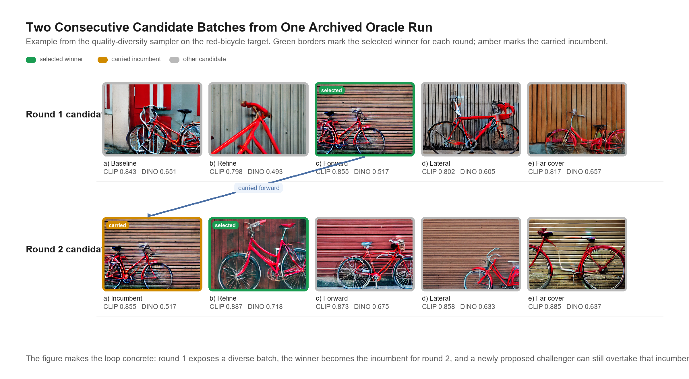
5.5 Oracle target-recovery protocol
The main quantitative protocol uses real images paired with manually written captions. For each target image (y), generation begins from the caption alone. The hidden target is used only by the oracle that scores candidates. The base oracle study uses 3 targets, 10 rounds per target, 4 candidates per round, and a fixed steering configuration, yielding 120 candidate images in total. The exact base-protocol table is given in Appendix D.
The repeated-seed extension repeats each target 3 times under different deterministic seeds, yielding 9 runs, 90 rounds, and 360 candidate rows. Final evaluation is reported under both CLIP and DINOv2. Exact target-level tables are given in Appendix E.
An additional caption-and-metric extension uses a curated Flickr8k subset to ask two related questions: whether the hidden-target protocol remains informative when initialization comes from an automatically generated rich caption rather than a manual caption, and whether the reported behavior depends strongly on the chosen image-similarity metric. The extension uses 6 selected targets, 36 runs, 144 rounds, and 576 scored candidate rows, compares human captions with BLIP-generated caption variants (Li et al., 2022), and compares CLIP, SigLIP (Zhai et al., 2023), and multi-metric oracle policies together with LPIPS as a supplementary perceptual distance (Zhang et al., 2018). Exact protocol details and confidence-interval tables are given in Appendix N.
This protocol is also part of the paper's novelty claim. Prior work often evaluates prompt fidelity, editing quality, or downstream reward scores, but much less often asks whether an iterative refinement loop can recover a hidden real-image target from caption-only initialization under repeated feedback. The protocol is intentionally narrow, but it turns a vague refinement narrative into a measurable round-by-round problem.
5.6 Controlled module slices
To isolate design choices inside the steering loop, the paper includes several matched-budget slices.
- Representation slices, which compare alternative steering representations while holding the outer loop fixed.
- Proposal slices, which compare local-search geometries.
- Preference slices, which compare batch-aggregation models.
- Direct-baseline slices, which compare the steering loop against prompt-only and non-updating alternatives under the same visible candidate budget.
- Stagnation-analysis slices, which study plateauing through late-round movement, incumbent reuse, and challenger pressure.
The goal of these slices is to identify which modeling choices most strongly alter the search dynamics. Exact slice definitions, protocol tables, and supplementary summaries are collected in Appendices G-L.
5.7 Budget-matched direct-baseline slice
The direct-baseline slice compares the steering loop with simpler alternatives under a common visible candidate budget of 5 rounds and 4 candidates per round. The compared methods are prompt-only best-of-budget seed search, heuristic prompt-modifier search, no-update resampling, and the current best steering policy. The comparison therefore asks how a fixed image budget is used under different refinement strategies.
The slice provides a direct comparative reference for the main oracle results. The exact checkpoint values used in the main-text figure are reported in Appendix G.3.
5.8 Human pairwise layer
The paper package also includes a small human pairwise evaluation protocol with curated pairs and annotation tooling. At present, it is protocol-ready but contains no collected human judgments. It is therefore part of the methodological infrastructure, not of the reported evidence.
6. Results
The results are organized from broadest claim to most specific mechanism. Section 6.1 establishes that the framework supports measurable hidden-target recovery at all. Section 6.2 asks the newly added direct-baseline question: what happens under the same visible candidate budget if one simply keeps resampling or rewrites the prompt heuristically? Sections 6.3-6.5 then ask which internal modeling choices most strongly affect recovery once the loop itself is treated as the object of study. Sections 6.6-6.8 focus on the main failure mode revealed by the earlier experiments, namely late-round plateauing, and study how anti-stagnation strategies change that behavior.
6.1 Hidden-target recovery is measurable and nontrivial
The most important outcome is that the loop supports measurable target recovery rather than only anecdotal improvement. In the base oracle target-recovery study, mean best-candidate CLIP similarity improves from 0.825 for the prompt-only baseline to 0.896 by round 10. In the repeated-seed multi-metric extension, mean CLIP similarity improves from 0.828 to 0.881, while mean DINOv2 similarity improves from 0.452 to 0.595.

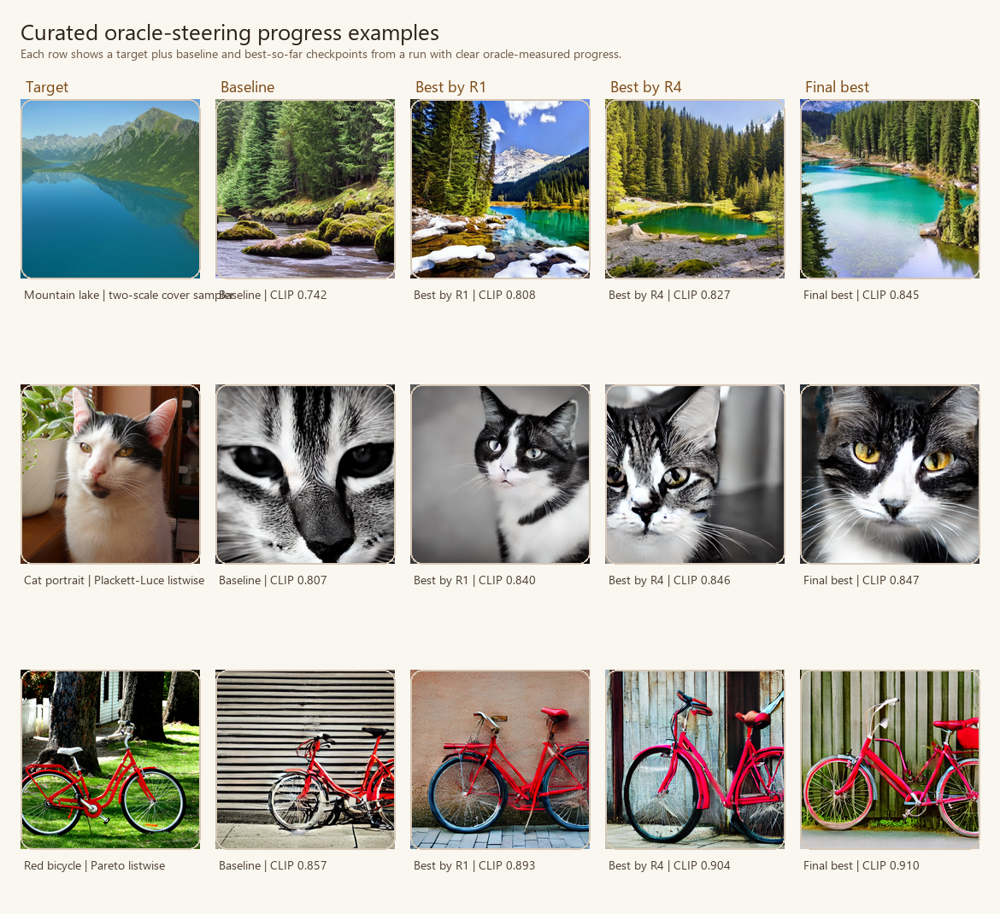
These gains are scientifically meaningful for two reasons. First, they show that iterative preference-guided inference can do more than produce a large first-round batch. Second, they show that the loop is not solely improving under the metric that chooses winners: DINOv2 also improves on average even though it is not the selection oracle in the base repeated protocol.
The repeated bundle also reveals meaningful target heterogeneity that is worth stating explicitly in the main text. Recovery is strongest for the red-bicycle target (0.916 final CLIP, 0.715 final DINOv2), weaker for the mountain-lake target (0.844, 0.505), and intermediate for the cat portrait (0.883, 0.565). This pattern suggests that the framework is not merely producing one uniform effect size; target structure and prompt-image ambiguity materially influence how much iterative steering can recover under a fixed loop.
A complementary caption-source and oracle-metric extension on a curated Flickr8k subset indicates that the protocol does not depend on manual prompts alone. The BLIP-selected detailed caption condition reaches final CLIP 0.810 (95% bootstrap CI [0.773, 0.845]), final SigLIP 0.786 ([0.728, 0.841]), final DINOv2 0.478 ([0.256, 0.693]), and final LPIPS 0.676 ([0.619, 0.737]), slightly improving on the human-caption condition on CLIP, SigLIP, and LPIPS while essentially matching it on DINOv2. Across oracle policies, CLIP selection gives the strongest final CLIP score (0.834, [0.808, 0.860]), SigLIP selection gives the strongest final SigLIP (0.789, [0.725, 0.853]) and DINOv2 (0.476, [0.258, 0.631]) endpoints, and the multi-metric oracle remains an intermediate compromise. The combined result suggests that richer automated captions broaden the feasible initialization space while the oracle metric still determines which notion of similarity is emphasized; Appendix N provides the exact numeric tables.
Table 2 collects the most decision-relevant quantitative comparisons from the main text. The purpose is not to collapse the paper into one scalar ranking, but to make the evidence hierarchy explicit: the repeated oracle study establishes the core effect, while later rows identify which modeling choices most strongly shape that effect.
| Main-text comparison | Key result | Interpretation |
|---|---|---|
| Repeated oracle target recovery | CLIP 0.828 -> 0.881, DINOv2 0.452 -> 0.595 |
iterative refinement is measurable and nontrivial |
| Budget-matched direct baselines | different simple baselines are strongest on different metrics under the same visible budget | framework-level analysis should be distinguished from any single current policy |
| Steering-direction slice | lightweight and fully token-aware steering variants are all competitive, but added expressivity does not guarantee stronger recovery | steering-direction structure matters, but the best form remains a controlled design choice |
| Preference-model extension | bradley_terry_preference gives strongest combined CLIP/DINOv2 outcome in its slice |
richer preference modeling can matter materially |
| Inspired-method / progress-aware follow-up | stronger late movement with reduced plateauing | challenger preservation changes the search regime |
| Restart-style reformulation | restart_directional best for plateau avoidance, restart_advantage best for final CLIP |
anti-plateau control is a multi-objective tradeoff |
They also clarify the novelty boundary of the result. The contribution is to evaluate a fixed-generator refinement loop as a dynamical process with observable convergence behavior. The paper's empirical novelty lies in making that process measurable and then using it to study which design choices matter.
6.2 Budget-matched direct baselines provide an informative reference
The direct-baseline slice places the steering loop alongside simpler alternatives under the same visible image budget. The comparison is valuable because it distinguishes a claim about the refinement framework from a claim about one particular policy.
The compact matched-budget protocol yields a competitive set of methods with distinct strengths. No-update resampling reaches the strongest final CLIP score, 0.881, with mean gain +0.051. Prompt-only best-of-budget reaches the strongest final DINOv2 score, 0.602, with mean gain +0.135. The current best StableSteering policy reaches 0.873 final CLIP and 0.553 final DINOv2, while the heuristic prompt-rewrite baseline reaches 0.875 CLIP and 0.498 DINOv2. Figure 5 summarizes the comparison at four checkpoints, and Appendix G provides the exact numerical tables.
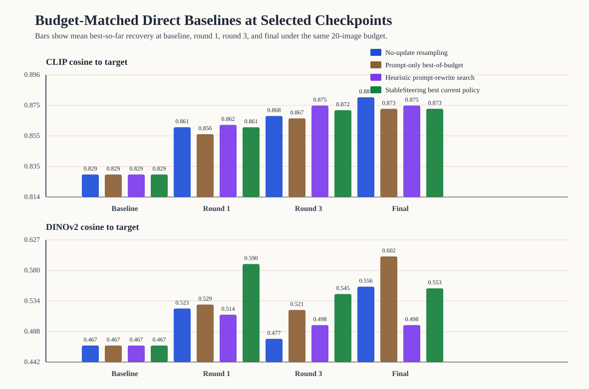
This comparison refines the paper’s interpretation in three ways. First, it separates a claim about the framework from a claim about the present policy. Second, it shows that a substantial portion of hidden-target recovery is achievable through budgeted candidate exposure alone. Third, it identifies update efficiency and incumbent management as the central methodological questions for future refinement policies.
The prompt-rewrite arm is also informative. The heuristic modifier-search baseline remains competitive on CLIP, especially for the red-bicycle target, while producing lower aggregate DINOv2 recovery. This suggests that direct prompt editing remains a meaningful comparator and that latent steering and prompt editing emphasize different parts of the refinement problem.
6.3 Steering representation affects recovery
The steering-mode slice asks whether it matters how the steering state is translated into prompt-conditioned control. In the updated four-way comparison, the content-weighted representation achieves the strongest final CLIP score (0.884), the shared-token and token-factorized representations achieve the largest CLIP deltas (0.063 and 0.063) and the strongest final DINOv2 scores (0.643 and 0.639), and the new token-vector-field representation remains competitive without becoming the clear winner (0.882 final CLIP, 0.622 final DINOv2). The resulting picture is more nuanced than a simple “more token awareness is better” story.
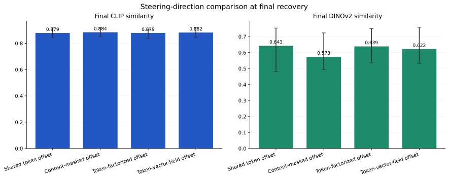
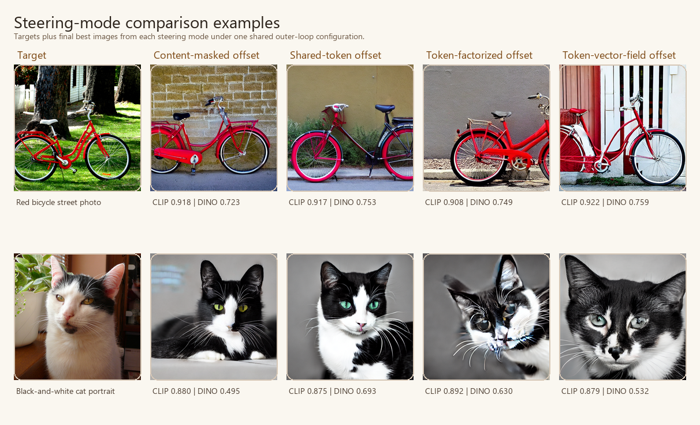
The methodological lesson is that representational structure matters, but in a graded way. The updated slice supports two conclusions at once: token-aware steering is a meaningful modeling axis, and additional token-wise flexibility does not automatically translate into stronger recovery. Appendix L provides the supporting slice tables and additional qualitative examples.
6.4 Proposal geometry affects the search regime
The sampler comparison slice already suggested that broader or more structured proposals matter: diversity_shell and line_search both reached mean final CLIP similarity of approximately 0.882, compared with 0.867 for exploit_orthogonal in the same controlled slice. The later method-extension study reinforces this conclusion. spherical_cover achieved the strongest final DINOv2 score among new sampler families (0.668), while annealed_shell and diversity_shell both produced larger CLIP deltas (0.065) than several earlier local baselines.
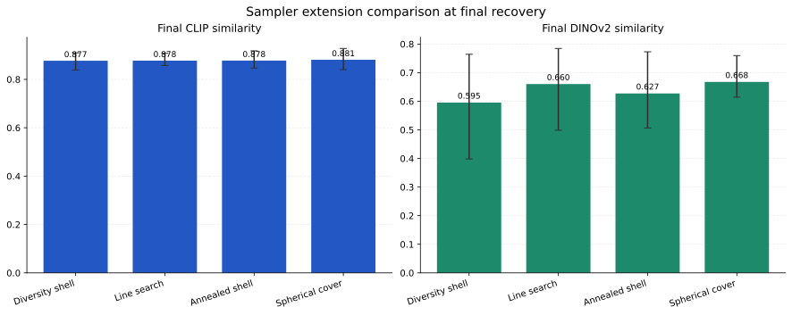
This result is consistent with the local-search view of refinement. The proposal policy determines which alternatives are visible to the preference model at each round, and therefore shapes both the attainable corrections and the likelihood of later-round stagnation. Supplementary proposal slices are reported in Appendices H-I.
6.5 Preference aggregation changes recovery behavior
Richer feedback modeling does not guarantee uniformly better final scores, but it clearly changes behavior. In the earlier feedback slice, winner-centric updates remained competitive in a small study. In the method-extension comparison, however, bradley_terry_preference emerged as the strongest new updater, reaching final CLIP 0.886 and final DINOv2 0.687, outperforming borda_preference, score_weighted_preference, and softmax_preference on the combined proxy view.
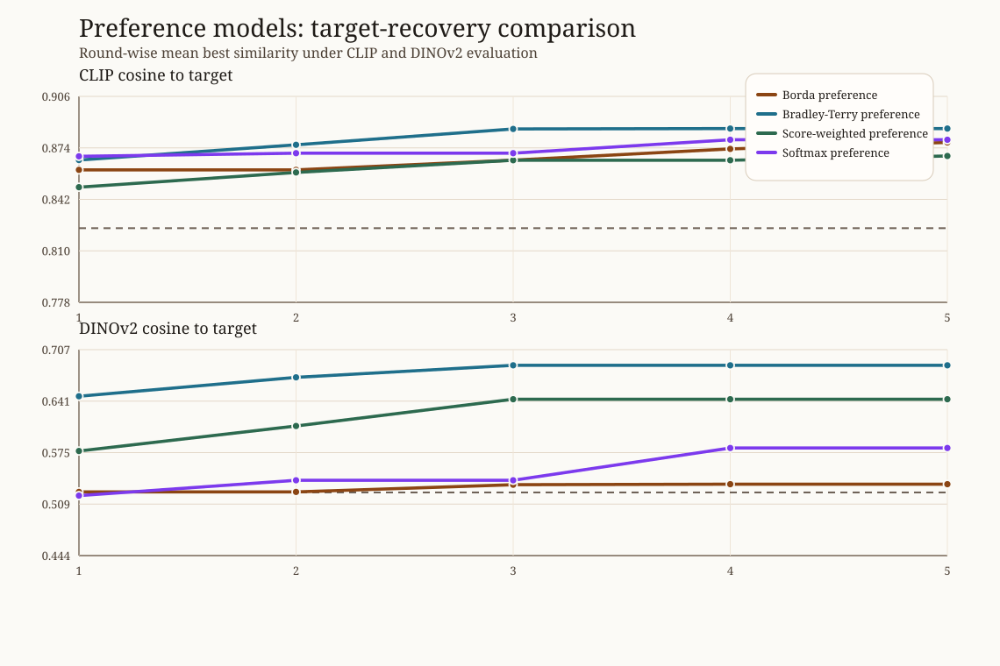
The main scientific implication is that once candidate diversity is available, the way feedback is aggregated becomes consequential. Winner-only updates use only a narrow fraction of the available comparative signal, whereas richer pairwise or listwise models can alter both recovery and stagnation behavior. Appendix A.3 and Appendices H-I give the full updater inventory and supplementary comparison tables.
6.6 Plateauing is a structural property of the loop
A recurrent phenomenon in oracle steering is that later rounds stop changing visually. Focused diagnosis experiments show that this impression corresponds to a measurable pattern. In the compact diagnosis bundles, the baseline oracle policy exhibited high incumbent selection share and high plateau share. For example, the baseline CLIP-oracle policy in the later compact inspired-method study had incumbent selection share 0.73 and plateau share 0.67.
The diagnosis experiments indicate that plateauing is created by a three-way interaction:
- the incumbent is always present,
- proposals remain too local, and
- winner-centric preference updates reinforce incumbent dominance.
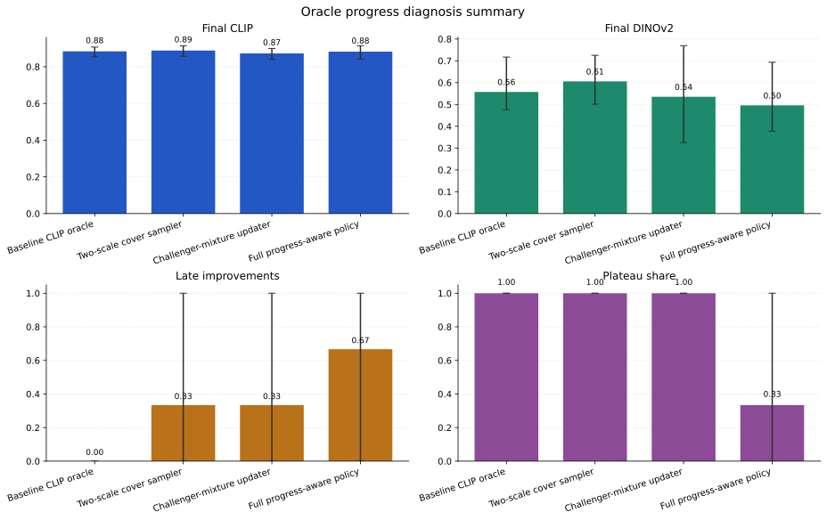
The resulting picture is mechanistic rather than anecdotal. Later-round stagnation is not simply a visual impression; it is a reproducible property of the interaction among proposal locality, incumbent carry-forward, and preference aggregation.
6.7 The most effective policies balance challenger diversity and incumbent retention
The most informative later results come from three mutually reinforcing bundles: the compact incumbent-policy slice, a literature-inspired method comparison, and a progress-aware follow-up. The compact incumbent-policy slice is especially useful because it isolates incumbent handling under one shared budget and one shared proposal family. In that controlled comparison, a soft incumbent penalty achieved the strongest aggregate proxy recovery (0.891 final CLIP, 0.636 final DINOv2), while hard incumbent exclusion removed end-of-run sticking most reliably but reduced final alignment (0.856 CLIP, 0.568 DINOv2). This establishes a clear mechanistic point: moderate incumbent discouragement is more effective than hard suppression.
The later exploratory bundles sharpen the same point from a wider design perspective. A diversity-oriented listwise policy produced final DINOv2 0.655, CLIP delta 0.049, incumbent selection share 0.20, and plateau share 0.00. A progress-aware pairwise policy produced final CLIP 0.883, final DINOv2 0.630, late improvements 1.33, incumbent selection share 0.60, and plateau share 0.33. Exact configuration names are given in Appendices I-J.
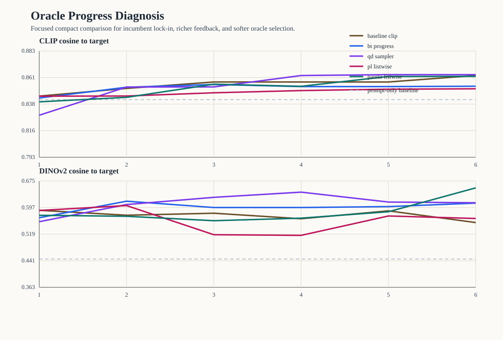
Together, these results support a precise methodological conclusion: proposal geometry, preference aggregation, and incumbent handling must be designed jointly so that the search neither settles too early nor loses the best recovered direction. The compact incumbent-policy slice is especially useful because it turns that claim into a direct controlled comparison. Supplementary details are provided in Appendix E.
6.8 Restart-style formulations make the plateau tradeoff more explicit
The newest compact reformulation bundle asks a slightly different question: can plateauing be reduced by changing the task formulation itself rather than only widening the local challenger set? Two restart-style variants were therefore introduced. restart_directional combines a restart-bridge sampler with a directional oracle that rewards movement toward the hidden target from the current incumbent. restart_advantage uses the same restart-style sampler with an incumbent-aware softmax updater and an oracle that mixes absolute CLIP score, challenger advantage over the incumbent, and novelty.
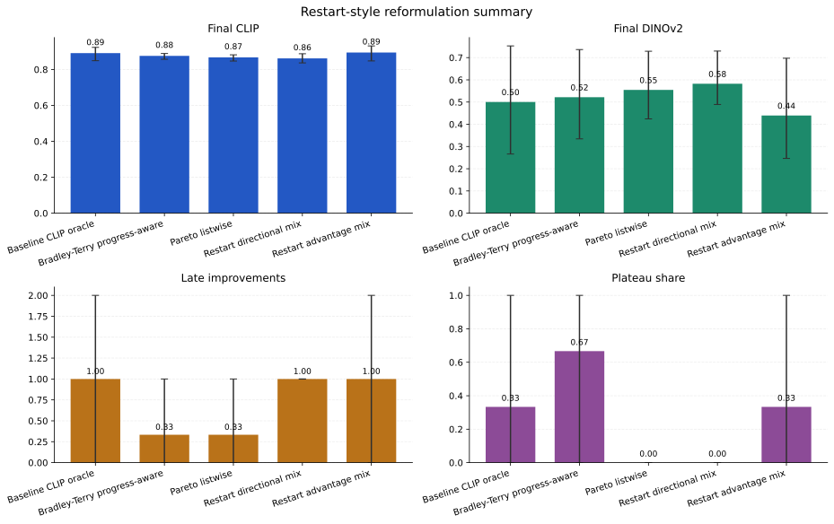
The restart-style comparison is informative because it clarifies the tradeoff rather than collapsing to one universally dominant policy. In the compact slice, a directional-restart formulation reduces incumbent selection share to 0.00, plateau share to 0.00, and yields the strongest DINOv2 recovery among the compared policies (0.582). An advantage-aware restart formulation yields the strongest final CLIP score (0.894) and the largest CLIP improvement (0.069), while retaining some incumbent reuse. The baseline CLIP policy remains competitive on final CLIP (0.891), but does so with heavier incumbent lock-in (0.73) and residual plateau share (0.33).
This comparison sharpens the main design question. Plateau avoidance and final proxy alignment are not identical objectives. Restart-style formulations show that one can reduce visible stagnation substantially, but different formulations place that gain at different points on the alignment–movement tradeoff.
6.9 Evidence summary
The evidence supports the following claims.
- Iterative inference-time steering can produce measurable hidden-target recovery beyond prompt-only initialization.
- Sampling, preference modeling, and oracle policy materially change the behavior of the loop.
- Plateauing is a structural phenomenon with interpretable causes.
- Moderate incumbent discouragement, restart-style proposals, and broader proposal coverage can improve late-round behavior.
The present studies also locate the main open frontiers for the framework.
- Budget-matched external comparisons remain an active area for policy improvement.
- The search over best-performing policies remains open and experimentally interesting.
- Human-subject evaluation is the natural next layer for connecting oracle recovery to user-facing preference.
- Broader benchmark coverage would further extend the current compact mechanism-focused studies.
7. Discussion
The main conceptual lesson is that iterative text-to-image refinement is best studied as an interaction process with its own optimization geometry. Even with a fixed diffusion backbone, steering representation, proposal geometry, preference aggregation, and incumbent handling define distinct search regimes and distinct failure modes.
This perspective explains several otherwise puzzling empirical patterns. Large first-round gains are unsurprising because the initial batch already exposes useful alternatives to the prompt-only baseline. Later-round stagnation does not necessarily imply that the task is solved; it can arise because the incumbent is repeatedly reselected under proposals that are too local or under updates that discard most of the batch. Hard anti-incumbent interventions restore motion but can overshoot. Richer proposal and preference models can restore motion more selectively, but they also make the search more sensitive to how the steering state itself is represented. These are not accidental implementation quirks. They are the defining tradeoffs of preference-guided local search under a latent generative model.
The broader implication is that inference-time steering occupies a middle ground between prompt rewriting and model adaptation. In that regime, refinement proceeds through repeated judgments over candidate images, and the search policy absorbs part of the burden that would otherwise fall on manual prompt revision or parameter updating.
The direct-baseline slice sharpens this interpretation by making the budget-efficiency question explicit: how should a fixed image budget be allocated across persistence, challenger diversity, and update strength? The matched-budget results show that simple resampling and prompt-only best-of-budget remain strong reference points, which in turn focuses attention on update efficiency and incumbent management.
8. Limitations
The present study is bounded in several clear ways.
- Proxy-based quantitative evaluation. The main quantitative studies rely on oracle similarity in pretrained embedding spaces.
- Compact controlled studies. The prompt and target sets are intentionally small because the goal is mechanism identification rather than large-scale benchmarking.
- A limited direct prompt baseline. The budget-matched slice includes a direct prompt-editing comparator, but not a stronger language-model prompt optimizer.
- One generator family. All reported experiments use one diffusion backbone under a fixed runtime regime.
- A prepared but unpopulated human-evaluation layer. The human pairwise protocol is included, but no human judgments are reported in the present manuscript.
These boundaries suggest a natural continuation of the present work: broader prompt and target suites, stronger prompt-optimization baselines, cross-backbone evaluation, populated human pairwise studies, and adaptive stopping rules informed by stagnation rather than fixed round budgets. The appendix records the supporting protocols already prepared for these extensions and separates exact protocol inventories from the conceptual argument developed in the main text.
9. Conclusion
This paper introduced StableSteering as an inference-time framework for preference-guided iterative refinement in text-to-image generation. The central methodological move is to separate persistent prompt intent from a session-level steering state and to study refinement as a loop with explicit steering representation, proposal, preference, and incumbent policies. The experiments show that this framing is scientifically useful. Hidden-target recovery is measurable, proposal geometry and preference aggregation materially affect behavior, steering-direction computation remains a meaningful but nontrivial design axis, and plateauing is a structural property of the loop shaped by the balance between challenger diversity and incumbent retention.
The strongest claim of the paper is methodological. StableSteering provides a framework in which iterative refinement becomes analyzable: a fixed-generator inference-time process with separable modeling axes, a hidden-target protocol that makes round-by-round progress observable, and controlled comparisons that clarify the roles of budget use, challenger diversity, preference aggregation, and incumbent policy. Taken together, these contributions establish iterative text-to-image refinement as a well-defined empirical object for further study and provide a concrete basis for future work on stronger preference models, richer proposal policies, and human-facing evaluation.
Data and Artifact Availability
All figures, preserved reports, experiment summaries, and result tables referenced in this manuscript are archived under the repository paper package. The appendix extends the main text by providing implementation inventories, exact protocol tables, confidence-interval summaries, and supplementary comparison results that are only summarized in the body of the paper.
References
Bengs, V., Saha, A., and Hüllermeier, E. (2021). Preference-based online learning with dueling bandits: A survey. Journal of Machine Learning Research, 22(7), 1-108.
Black, K., Janner, M., Du, Y., Kostrikov, I., and Levine, S. (2024). Training diffusion models with reinforcement learning. International Conference on Learning Representations.
Brack, M., Friedrich, F., Hintersdorf, D., Struppek, L., Schramowski, P., and Kersting, K. (2023). SEGA: Instructing text-to-image models using semantic guidance. Advances in Neural Information Processing Systems.
Brooks, T., Holynski, A., and Efros, A. A. (2023). InstructPix2Pix: Learning to follow image editing instructions. Proceedings of the IEEE/CVF Conference on Computer Vision and Pattern Recognition, 18392-18402.
Cheng, J., Yin, B., Cai, K., Huang, M., Li, H., He, Y., Lu, X., Li, Y., Cheng, Y., Yan, Y., and Liang, X. (2024). TheaterGen: Character management with LLM for consistent multi-turn image generation. arXiv preprint arXiv:2404.18919.
Croitoru, F.-A., Hondru, V., Ionescu, R. T., Sebe, N., and Shah, M. (2025). Curriculum direct preference optimization for diffusion and consistency models. Proceedings of the IEEE/CVF Conference on Computer Vision and Pattern Recognition.
Fan, L., Liu, Y., Huang, Y., Li, Y., Zhang, Y., White, M., Aziz, W., and Yao, H. (2024). DPOK: Reinforcement learning for fine-tuning text-to-image diffusion models. arXiv preprint arXiv:2305.16381.
Hertz, A., Mokady, R., Tenenbaum, J., Aberman, K., Pritch, Y., and Cohen-Or, D. (2022). Prompt-to-Prompt image editing with cross-attention control. arXiv preprint arXiv:2208.01626.
Ho, J., and Salimans, T. (2022). Classifier-free diffusion guidance. arXiv preprint arXiv:2207.12598.
Hodosh, M., Young, P., and Hockenmaier, J. (2013). Framing image description as a ranking task: Data, models and evaluation metrics. Journal of Artificial Intelligence Research, 47, 853-899.
Kawar, B., Tov, O., Mokady, R., Elnekave, E., Aberman, K., and Pritch, Y. (2023). Imagic: Text-based real image editing with diffusion models. Proceedings of the IEEE/CVF Conference on Computer Vision and Pattern Recognition, 6007-6017.
Kim, G., Kwon, T., and Ye, J. C. (2022). DiffusionCLIP: Text-guided diffusion models for robust image manipulation. Proceedings of the IEEE/CVF Conference on Computer Vision and Pattern Recognition, 2426-2435.
Li, J., Li, D., Xiong, C., and Hoi, S. (2022). BLIP: Bootstrapping language-image pre-training for unified vision-language understanding and generation. Proceedings of the 39th International Conference on Machine Learning, 12888-12900.
Lian, S., Lin, H., Yue, S., Huang, H., Zhang, H., Zhou, B., and Zhang, W. (2024). T2I-Copilot: Training-free multi-agent text-to-image generation with prompt engineering, model selection, and self-improvement. arXiv preprint arXiv:2410.03031.
Meng, C., He, Y., Song, Y., Song, J., Wu, J., Zhu, J.-Y., and Ermon, S. (2022). SDEdit: Guided image synthesis and editing with stochastic differential equations. International Conference on Learning Representations.
Miao, Z., Wang, J., Wang, Z., Yang, Z., Wang, L., Qiu, Q., and Liu, Z. (2024). Training diffusion models towards diverse image generation with reinforcement learning. Proceedings of the IEEE/CVF Conference on Computer Vision and Pattern Recognition, 10844-10853.
Mouret, J.-B., and Clune, J. (2015). Illuminating search spaces by mapping elites. arXiv preprint arXiv:1504.04909.
Nara, R., Lin, Y.-C., Nozawa, Y., Ng, Y., Itoh, G., Torii, O., and Matsui, Y. (2024). Revisiting relevance feedback for CLIP-based interactive image retrieval. arXiv preprint arXiv:2404.16398.
Oppenlaender, J., Linder, R., and Silvennoinen, J. (2023). Prompting AI art: An investigation into the creative skill of prompt engineering. arXiv preprint arXiv:2303.13534.
Rocchio, J. J. (1971). Relevance feedback in information retrieval. In G. Salton (Ed.), The SMART Retrieval System: Experiments in Automatic Document Processing. Prentice Hall.
Rombach, R., Blattmann, A., Lorenz, D., Esser, P., and Ommer, B. (2022). High-resolution image synthesis with latent diffusion models. Proceedings of the IEEE/CVF Conference on Computer Vision and Pattern Recognition, 10684-10695.
Salton, G., and Buckley, C. (1990). Improving retrieval performance by relevance feedback. Journal of the American Society for Information Science, 41(4), 288-297.
Wang, Z. J., Montoya, E., Munechika, D., Yang, H., Hoover, B., and Chau, D. H. (2023). DiffusionDB: A large-scale prompt gallery dataset for text-to-image generative models. Proceedings of the 61st Annual Meeting of the Association for Computational Linguistics, 729-758.
Wang, Z., Huang, Y., Song, D., Ma, L., and Zhang, T. (2024a). PromptCharm: Text-to-image generation through multi-modal prompting and refinement. Proceedings of the CHI Conference on Human Factors in Computing Systems.
Wang, R., Liu, T., Hsieh, C.-J., and Gong, B. (2024b). On discrete prompt optimization for diffusion models. Proceedings of the 41st International Conference on Machine Learning, 50992-51011.
Xian, Y., Xie, P., Zhu, P., Xia, F., Tu, X., Sun, B., Chua, T.-S., and Dong, Q. (2024). AutoStudio: Crafting consistent subjects in multi-turn interactive image generation. arXiv preprint arXiv:2406.04363.
Xu, J., Liu, X., Wu, Y., Tong, Y., Li, Q., Ding, M., Tang, J., and Dong, Y. (2023). ImageReward: Learning and evaluating human preferences for text-to-image generation. arXiv preprint arXiv:2304.05977.
Yang, Y., Yu, T., Zhao, Z., Wang, D., Su, H., and Zhu, J. (2023). Using human feedback to fine-tune diffusion models without any reward model. arXiv preprint arXiv:2311.13231.
Zhai, X., Mustafa, B., Kolesnikov, A., and Beyer, L. (2023). Sigmoid loss for language image pre-training. Proceedings of the IEEE/CVF International Conference on Computer Vision, 11975-11986.
Zhang, R., Isola, P., Efros, A. A., Shechtman, E., and Wang, O. (2018). The unreasonable effectiveness of deep features as a perceptual metric. Proceedings of the IEEE/CVF Conference on Computer Vision and Pattern Recognition, 586-595.
Zhang, L., Rao, A., and Agrawala, M. (2023). Adding conditional control to text-to-image diffusion models. Proceedings of the IEEE/CVF International Conference on Computer Vision, 3836-3847.
Appendix
The following appendix is included directly in the HTML paper for self-contained reading. A standalone appendix page is also available in the paper package.
Appendix: Controlled Slices and Submission Package Notes
Appendix A. Sampling, Feedback, and Update Modules
The main manuscript develops the refinement framework at the level of concepts, equations, and experimental questions. This appendix complements that presentation by recording the concrete module families used in the archived repository snapshot and by collecting protocol tables and supplementary comparisons that are only summarized in the main text.
A.1 Implemented Sampler Families
| Sampler | Operational behavior | Typical roles |
|---|---|---|
random_local |
Produces one near-incumbent exploit proposal and several farther exploratory proposals with deliberate directional separation inside the trust radius. | exploit, explore |
exploit_orthogonal |
Uses a fixed directional pattern that mixes near-incumbent and cross-axis probes. | exploit, refine, orthogonal, mirror |
axis_sweep |
Sweeps positive and negative moves along steering axes with small jitter. | axis_positive, axis_negative |
uncertainty_guided |
Increases the perturbation span across the batch so later candidates are more exploratory. | explore, validation |
incumbent_mix |
Mixes conservative refinements with one broader challenger proposal. | refine, mix, challenger |
diversity_shell |
Places challengers on a wider shell around the incumbent with deliberate pairwise separation. | shell_probe, shell_counterprobe |
line_search |
Probes forward, backtrack, and lateral moves around the current direction. | forward_probe, far_forward, backtrack, lateral_probe, counter_lateral |
annealed_shell |
Starts with a wider shell around the incumbent and gradually narrows that shell as rounds progress, with paired probe and counter-probe directions plus controlled jitter. | annealed_probe, annealed_counterprobe |
spherical_cover |
Greedily selects angularly separated challenger directions on the trust-region sphere to cover the available region more uniformly. | cover_probe |
two_scale_cover |
Mixes short-radius and long-radius challenger probes over separated directions so one round can contain both local refinements and farther alternatives. | near_cover_probe, far_cover_probe |
plateau_escape |
Proposes one carried-forward incumbent plus forward, lateral, and counter-probe challengers designed to escape visible late-round repetition. | forward_escape, lateral_plus, lateral_minus, counter_probe |
quality_diversity_mix |
Mixes incumbent-adjacent proposals with angularly separated challenger probes inspired by quality-diversity coverage search so the batch preserves both local refinement and broader behavioral diversity. | elite_probe, diversity_probe, counter_probe |
restart_bridge_mix |
Mixes incumbent-adjacent bridge refinements with partial restarts toward new regions so a round can preserve local progress while still challenging the incumbent with less correlated candidates. | bridge_refine, bridge_forward, partial_restart, lateral_restart, counter_reset |
All samplers are bounded by the configured trust radius. In round one, the system also inserts a pinned baseline_prompt candidate with zero steering. In later rounds, the previous winner is inserted as a carried-forward incumbent before the sampler fills the remaining candidate slots.
Two stagnation-control parameters now modify this process. stagnation_patience counts repeated selected-image reuse across rounds, and stagnation_trust_radius_scale widens the effective trust radius once that plateau detector fires. The widened trust radius is recorded in candidate metadata so later analysis can tell when escape logic was active.
A.2 Implemented Feedback Modes
| Feedback mode | Raw payload | Normalized winner signal |
|---|---|---|
scalar_rating |
mapping from candidate id to numeric rating | highest-rated candidate after deterministic tie-breaking |
pairwise |
winner id and loser id | winner id plus loser id |
winner_only |
winner id | winner id |
approve_reject |
mapping from candidate id to boolean approval, optional preferred winner | preferred approved winner plus approved and rejected sets |
top_k |
ranked list of candidate ids | top-ranked candidate plus full ranking |
The current implementation validates that referenced candidates belong to the current round and rejects malformed pairwise, ranking, and approval structures before update.
A.3 Implemented Updaters
| Updater | Update rule | Interpretation |
|---|---|---|
winner_copy |
$z_{t+1} = w_t$ | exact replacement with the winning candidate state |
winner_average |
$z_{t+1} = 0.5 z_t + 0.5 w_t$ | smoothed movement toward the winner |
linear_preference |
$z_{t+1} = 0.35 z_t + 0.65 w_t$ | stronger heuristic move toward the winner |
score_weighted_preference |
$z_{t+1} = (1-\alpha) z_t + \alpha \, \mu_t^{+}$, with score-weighted centroid $\mu_t^{+}$ | uses ratings, rankings, or approvals as positive evidence instead of only the top winner |
contrastive_preference |
$z_{t+1} = z_t + \alpha (\mu_t^{+} - \mu_t^{-})$ | moves toward preferred candidates and away from explicitly dispreferred candidates |
softmax_preference |
$z_{t+1} = (1-\alpha) z_t + \alpha \sum_j \pi_j z_t^{(j)}$, with $\pi_j \propto \exp(\beta r_j)$ over normalized scores | uses a softmax-weighted preference mixture so highly rated challengers dominate the next state without discarding the rest of the batch |
borda_preference |
$z_{t+1} = (1-\alpha) z_t + \alpha \sum_j \omega_j z_t^{(j)}$, with Borda-style ordinal weights $\omega_j$ derived from ranking position | treats the batch as an ordered list and moves toward a centroid that reflects the full ranking rather than only the winner |
bradley_terry_preference |
$z_{t+1} = (1-\alpha) z_t + \alpha \sum_j \rho_j z_t^{(j)}$, where $\rho_j$ is induced by lightweight Bradley-Terry latent utilities fit from pairwise comparisons implied by the batch | approximates a probabilistic pairwise preference model and uses the inferred utilities to weight the next steering state |
challenger_mixture_preference |
$z_{t+1} = z_t + \alpha \Delta_{\text{winner}} + \beta \Delta_{\text{challengers}}$, where challenger weights depend on margin to the incumbent | allows near-tie challengers to influence the next state even when the incumbent still wins the round |
plackett_luce_preference |
$z_{t+1} = (1-\alpha) z_t + \alpha \sum_j \eta_j z_t^{(j)}$, where $\eta_j$ is induced by a lightweight Plackett-Luce-style listwise utility model fit from the ranked batch | uses the full ranked order to produce a probabilistic listwise update rather than a winner-only step |
advantage_softmax_preference |
$z_{t+1} = (1-\alpha) z_t + \alpha \sum_j \pi_j z_t^{(j)}$, with $\pi_j \propto \exp(\beta (r_j - r_{\text{inc}}))$ over incumbent-relative advantages | preserves incumbent information while increasing the weight of challengers that genuinely outperform the incumbent rather than merely scoring well in absolute terms |
These update rules are deliberately lightweight. They should be read as session-level control policies, not as full statistical preference estimators or learned reward models.
Appendix B. Budget-Normalized Seed-Policy Slice
The seed-policy slice fixes the prompt subset, sampler, updater, and two-round steering-loop budget while comparing fixed-per-round and fixed-per-candidate seeding. Its purpose is methodological control rather than outcome-quality comparison.
| Policy | Runs | Completed runs | Total rounds | Mean rounds / run | Mean feedback events / run | Screening flags |
|---|---|---|---|---|---|---|
| Fixed per candidate | 9 | 9 | 18 | 2.0 | 1.0 | 7 |
| Fixed per round | 9 | 9 | 18 | 2.0 | 1.0 | 13 |
Interpretation boundary: both policies preserve the same workflow structure under matched conditions. The differing screening-flag counts are retained as descriptive diagnostics only and should not be read as evidence of visual superiority.
Appendix C. Fixed-Sampler Updater Ablation
The updater ablation fixes the sampler, seed policy, prompt subset, and two-round budget while comparing winner_copy, winner_average, and linear_preference.
| Updater | Runs | Completed runs | Total rounds | Mean rounds / run | Mean feedback events / run | Screening flags |
|---|---|---|---|---|---|---|
| Linear preference | 9 | 9 | 18 | 2.0 | 1.0 | 7 |
| Winner average | 9 | 9 | 18 | 2.0 | 1.0 | 8 |
| Winner copy | 9 | 9 | 18 | 2.0 | 1.0 | 8 |
Interpretation boundary: the ablation demonstrates that the same controlled experiment scaffold can compare updater choices cleanly. It does not establish that one updater should be preferred scientifically.
Appendix D. Oracle Target-Recovery Proxy Study
The oracle target-recovery bundle provides the exact protocol details that underlie Section 6.1 of the main manuscript. Each task begins from a real target image paired with a manually written caption and negative prompt. The generator receives only the text inputs. The hidden target image is used exclusively by an oracle that scores each generated candidate by CLIP image-similarity and selects the highest-scoring candidate as the winner for the next steering update.
This protocol preserves the conceptual framing of StableSteering. It still starts from language, still uses candidate proposals and winner-based updates, and still never exposes the target image directly to the generator. The hidden target is therefore an evaluation device and an oracle-feedback source, not a conditioning signal.
D.1 Protocol Summary
| Field | Value |
|---|---|
| Targets | 3 held-out real images with manual captions |
| Rounds per target | 10 |
| Candidates per round | 4 |
| Sampler | exploit_orthogonal |
| Updater | linear_preference |
| Feedback mode | winner_only |
| Seed policy | fixed-per-candidate |
| Steering dimension | 5 |
| Oracle metric | CLIP image-image cosine similarity |
D.2 Aggregate Outcome
| Measure | Mean |
|---|---|
| Baseline prompt-only similarity | 0.825 |
| Round-1 best-candidate similarity | 0.888 |
| Round-10 best-candidate similarity | 0.896 |
| Baseline to round-10 improvement | 0.071 |
All three targets improve relative to the baseline prompt-only render. Two targets achieve their best score in the first round and then plateau, while one target continues improving until round four. This pattern suggests that the current steering loop often finds a strong target-facing direction early, with later rounds serving mostly to preserve rather than substantially extend that gain.
D.3 Interpretation Boundary
The oracle bundle is intentionally narrow.
- It is a proxy target-recovery study, not a human-preference study.
- The same embedding family is used for oracle selection and evaluation.
- Improvement in CLIP space should therefore be interpreted as movement toward the hidden target under that proxy metric, not as general visual superiority.
Despite these caveats, the bundle matters because it demonstrates that StableSteering can support a round-by-round measurable alignment study in addition to workflow-level protocol slices.
Appendix E. Repeated-Seed Multi-Metric Oracle Extension
The repeated oracle extension provides the detailed protocol and target-level tables behind the main-text repeated-oracle result. Each of the three held-out targets is run three times under different deterministic seed assignments, yielding 9 runs, 90 rounds, and 360 candidate rows. CLIP image-image cosine similarity still serves as the oracle metric used to choose winners, but final evaluation is reported under both CLIP and DINOv2 image embeddings.
E.1 Protocol Summary
| Field | Value |
|---|---|
| Targets | 3 held-out real images with manual captions |
| Repeats per target | 3 |
| Total runs | 9 |
| Rounds per run | 10 |
| Candidates per round | 4 |
| Sampler | exploit_orthogonal |
| Updater | linear_preference |
| Feedback mode | winner_only |
| Seed policy | fixed-per-candidate |
| Steering dimension | 5 |
| Oracle metric | CLIP image-image cosine similarity |
| Auxiliary evaluation metric | DINOv2 image-image cosine similarity |
E.2 Aggregate Outcome
| Metric | Baseline mean | Final mean | Mean improvement | Run-level sd |
|---|---|---|---|---|
| CLIP cosine | 0.828 | 0.881 | 0.053 | 0.035 |
| DINOv2 cosine | 0.452 | 0.595 | 0.142 | 0.179 |
E.3 Target-Level Summary
| Target | Repeats | CLIP final (mean ± sd) | DINOv2 final (mean ± sd) |
|---|---|---|---|
| Black-and-white cat portrait | 3 | 0.883 ± 0.016 | 0.565 ± 0.047 |
| Mountain lake landscape | 3 | 0.844 ± 0.005 | 0.505 ± 0.067 |
| Red bicycle street photo | 3 | 0.916 ± 0.011 | 0.715 ± 0.035 |
E.4 Interpretation Boundary
- CLIP still acts as the oracle that chooses winners.
- DINOv2 is an independent evaluator, not a second oracle.
- The extension reduces single-seed and single-metric risk but remains a proxy target-recovery study rather than a human-perception study.
E.5 Plateau and Stagnation-Control Follow-ons
The repeated oracle extension also exposed a qualitative failure mode: visible later-round freezing. In the original repeated-seed oracle bundle, all 9/9 runs reused a previously selected image at some point and 8/9 runs ended with the same selected image in the last three rounds.
Three follow-on bundles were therefore run. The first replaced the older oracle policy with the new plateau_escape sampler and softmax_preference updater while keeping the same target family and repeated-seed protocol. The second added two stronger anti-stagnation controls on top of that bundle: temporary trust-radius widening after stagnation and oracle-side incumbent cooldown, which excludes the carried-forward incumbent from winner selection after repeated same-image reuse. The third kept the same compact plateau_escape + softmax_preference family but compared three incumbent-handling policies directly under a matched budget: carry-forward baseline, soft incumbent penalty, and hard incumbent cooldown.
E.5.1 Plateau-Escape Bundle
| Measure | Value |
|---|---|
| Runs | 9 |
| Last-three-round identical-image plateaus | 8 |
| Runs still improving after round 4 | 6 |
| Mean final CLIP cosine | 0.886 |
| Mean final DINOv2 cosine | 0.554 |
Interpretation: plateau_escape and softmax_preference improved late-round movement relative to the earlier repeated oracle bundle, but visible incumbent freezing was still common.
E.5.2 Stagnation-Control Bundle
| Measure | Value |
|---|---|
| Runs | 9 |
| Last-three-round identical-image plateaus | 0 |
| Runs still improving after round 4 | 8 |
| Mean final CLIP cosine | 0.869 |
| Mean final DINOv2 cosine | 0.598 |
Interpretation: the stagnation-control policy solved the visible freezing problem almost completely, but it reduced final CLIP recovery relative to the softer plateau-escape bundle. The most plausible explanation is over-exploration: hard incumbent suppression keeps the session moving, but sometimes away from the current best proxy solution.
E.5.3 Budget-Matched Incumbent-Policy Slice
| Policy | Runs | Final CLIP (mean ± sd) | Final DINOv2 (mean ± sd) | Improves after round 4 | Last-three-round plateaus | Mean unique selected-image ratio |
|---|---|---|---|---|---|---|
| Carry-forward baseline | 3 | 0.884 ± 0.037 | 0.583 ± 0.134 | 2/3 | 1/3 | 0.556 |
| Soft incumbent penalty | 3 | 0.891 ± 0.033 | 0.636 ± 0.112 | 1/3 | 2/3 | 0.389 |
| Hard incumbent cooldown | 3 | 0.856 ± 0.034 | 0.568 ± 0.132 | 1/3 | 0/3 | 0.556 |
Interpretation: the compact matched-budget slice sharpens the anti-stagnation story. Soft incumbent penalty achieves the strongest final proxy recovery on this small comparison, suggesting that milder incumbent discouragement can be helpful. Hard cooldown still removes end-of-run sticking most reliably, but again appears too aggressive for final alignment. The problem therefore looks less like a binary “freeze or move” issue and more like a tradeoff between retaining the best incumbent and preserving useful challenger pressure.

Appendix F. Human Pairwise Evaluation Layer
The paper package now includes a small direct-human evaluation layer meant for prompt-faithfulness and coherence judgments. The layer is intentionally modest: it curates six pairwise comparisons and packages them for browser-based inspection plus CSV-based annotation.
F.1 Package Summary
| Field | Value |
|---|---|
| Prompt families | 3 |
| Pair types | baseline vs StableSteering final; no-update vs StableSteering final |
| Total curated pairs | 6 |
| Annotation responses | left, right, tie, invalid |
| Browser preview | pairwise_review.html |
| Current annotations | 0 |
F.2 Collection Question
Judges are asked a single fixed question:
Which image better satisfies the prompt while remaining visually coherent?
This wording is intentionally narrower than “which image is better overall.” It targets the central interaction claim of the paper: the steering loop should help move from prompt-only initialization toward images that better satisfy the intended prompt while preserving coherence.
F.3 Interpretation Boundary
- The current package is protocol-ready but contains no human judgments yet.
- It therefore supports submission completeness rather than outcome evidence.
- Once populated, the layer can support direct pairwise preference estimates with confidence intervals and agreement reporting.
Appendix G. Budget-Matched Direct Baseline Comparison
This appendix provides the exact protocol tables, checkpoint values, and supplementary figure associated with the main-text direct-baseline comparison. It fixes the budget at 5 rounds and 4 candidates per round for every method and compares four approaches on the same hidden-target family:
prompt_best_of_budget: same caption, new seeds, keep the best image seen so far.prompt_modifier_search: heuristic prompt rewriting through a fixed library of textual modifiers.no_update_resampling: same sampler family as StableSteering, but the steering state is reset each round and never updated from feedback.stablesteering_best: the current best paper policy,quality_diversity_mix + bradley_terry_preference + top_k + content_masked.
G.1 Protocol Summary
| Field | Value |
|---|---|
| Targets | 3 held-out real images with manual captions |
| Repeats per target | 2 |
| Total runs | 24 |
| Rounds per run | 5 |
| Candidates per round | 4 |
| Total visible candidate budget per run | 20 |
| Selection oracle | CLIP cosine to the hidden target |
| Auxiliary evaluation | DINOv2 cosine to the hidden target |
G.2 Aggregate Outcome
| Method | Mean final CLIP | Mean CLIP gain | Mean final DINOv2 | Mean DINOv2 gain |
|---|---|---|---|---|
no_update_resampling |
0.881 | +0.051 | 0.556 | +0.089 |
prompt_modifier_search |
0.875 | +0.046 | 0.498 | +0.031 |
stablesteering_best |
0.873 | +0.044 | 0.553 | +0.086 |
prompt_best_of_budget |
0.873 | +0.044 | 0.602 | +0.135 |
G.3 Exact Checkpoint Values for Figure 5
The main-text Figure 5 is shown as grouped bars at four checkpoints. The exact mean best-so-far values used in that figure are listed below.
G.3.1 CLIP cosine to the hidden target
| Method | Baseline | Round 1 | Round 3 | Final |
|---|---|---|---|---|
no_update_resampling |
0.829 | 0.861 | 0.868 | 0.881 |
prompt_best_of_budget |
0.829 | 0.856 | 0.867 | 0.873 |
prompt_modifier_search |
0.829 | 0.862 | 0.875 | 0.875 |
stablesteering_best |
0.829 | 0.861 | 0.872 | 0.873 |
G.3.2 DINOv2 cosine to the hidden target
| Method | Baseline | Round 1 | Round 3 | Final |
|---|---|---|---|---|
no_update_resampling |
0.467 | 0.523 | 0.477 | 0.556 |
prompt_best_of_budget |
0.467 | 0.529 | 0.521 | 0.602 |
prompt_modifier_search |
0.467 | 0.514 | 0.498 | 0.498 |
stablesteering_best |
0.467 | 0.590 | 0.545 | 0.553 |
G.4 Interpretation Boundary
This slice changes the scientific interpretation of the paper in an important way.
- The current framework remains valuable, but the current best steering policy does not dominate the direct baselines under a compact matched budget.
- Simple seed search and no-update resampling already recover a substantial portion of the hidden-target signal.
- The heuristic prompt-rewrite arm is informative but still weaker than a stronger language-model prompt optimizer would be.
The right conclusion is therefore not that steering has failed. The right conclusion is that the problem has become more precise: the next generation of update and incumbent policies must beat simple budgeted alternatives, not only produce measurable oracle improvement in isolation.
Appendix H. Sampler and Feedback-Model Comparison Slice
The final controlled bundle collects supplementary module comparisons that support Sections 6.4 and 6.5 of the main manuscript. The bundle is split into two slices. The sampler slice fixes the updater at linear_preference with winner_only feedback and compares random_local, exploit_orthogonal, diversity_shell, and line_search. The feedback-model slice fixes the sampler at exploit_orthogonal and compares four update-and-feedback pairings: winner_average with winner_only, linear_preference with winner_only, score_weighted_preference with scalar_rating, and contrastive_preference with top_k ranking.
All runs use the same three real-image targets, the same manual captions, a five-round budget, fixed-per-candidate seeds, a five-dimensional steering state, and four candidates per round. The resulting bundle contains 24 runs, 120 rounds, and 480 candidate rows.
H.1 Sampler Slice Summary
| Sampler | Mean baseline score | Mean final best score | Mean improvement |
|---|---|---|---|
diversity_shell |
0.829 | 0.882 | 0.053 |
line_search |
0.829 | 0.882 | 0.053 |
exploit_orthogonal |
0.828 | 0.867 | 0.038 |
random_local |
0.844 | 0.876 | 0.032 |
The main qualitative pattern is that the newly added broader search policies, diversity_shell and line_search, finish higher than the older local baselines under this oracle proxy. This suggests that proposal geometry remains a meaningful scientific axis even when the update rule is held fixed.
H.2 Feedback-Model Slice Summary
| Updater / feedback pairing | Mean baseline score | Mean final best score | Mean improvement |
|---|---|---|---|
winner_average + winner_only |
0.829 | 0.882 | 0.053 |
linear_preference + winner_only |
0.839 | 0.885 | 0.046 |
contrastive_preference + top_k |
0.827 | 0.873 | 0.045 |
score_weighted_preference + scalar_rating |
0.845 | 0.883 | 0.038 |
The richer preference models remain competitive, but this small proxy study does not yet show that they dominate winner-centric updates. The more defensible interpretation is methodological: StableSteering can host different preference models and compare them under the same steering scaffold.
H.3 Interpretation Boundary
This bundle should be read as an exploratory controlled slice rather than a definitive ranking.
- The same CLIP family is still used for oracle selection and evaluation.
- The target set is intentionally small.
- The sampler slice and the feedback slice answer different questions and should not be compared directly.
- The resulting ordering is therefore evidence of sensitivity to modeling choice, not proof of globally preferred policies.
Appendix I. Method-Extension Comparison for New Samplers, Preference Models, and Oracle Policies
The earlier sampler and feedback-model slice established that the steering loop is sensitive to modeling choice. The next question is whether the framework can absorb genuinely different method families without changing the surrounding session scaffold. The method-extension bundle answers that question with one larger but still controlled hidden-target recovery study. It introduces two new sampler families, two new ordinal preference updaters, and two alternative oracle-selection policies on top of the earlier CLIP-only oracle.
All three slices share the same outer protocol: three held-out targets with manual captions, one repeat per target-policy cell, five rounds per run, four candidates per round, fixed-per-candidate seeds, a five-dimensional steering state, and a 512x512 Stable Diffusion v1.5 generation backend. The bundle contains 33 runs, 165 rounds, and 660 candidate rows in total.
I.1 Sampler Extension Slice
The sampler slice fixes the updater at softmax_preference and compares four broader search geometries: diversity_shell, line_search, annealed_shell, and spherical_cover.
| Sampler | Final CLIP | CLIP delta | Final DINOv2 | DINOv2 delta |
|---|---|---|---|---|
annealed_shell |
0.878 | 0.065 | 0.627 | 0.110 |
diversity_shell |
0.877 | 0.065 | 0.595 | 0.127 |
line_search |
0.878 | 0.052 | 0.660 | 0.095 |
spherical_cover |
0.881 | 0.041 | 0.668 | 0.109 |
Interpretation: the sampler slice is competitive rather than decisive. spherical_cover finishes with the strongest final CLIP and DINOv2 scores, while annealed_shell remains competitive with both of the earlier diversity-forward baselines. The broader conclusion is that the proposal geometry remains a meaningful modeling choice: angular coverage and round-dependent shell narrowing both change the behavior of the same outer steering loop.
I.2 Preference-Model Extension Slice
The preference-model slice fixes the sampler at diversity_shell and compares four update rules: softmax_preference, score_weighted_preference, borda_preference, and bradley_terry_preference.
| Preference model | Final CLIP | CLIP delta | Final DINOv2 | DINOv2 delta |
|---|---|---|---|---|
borda_preference |
0.877 | 0.047 | 0.535 | -0.007 |
bradley_terry_preference |
0.886 | 0.088 | 0.687 | 0.150 |
score_weighted_preference |
0.869 | 0.047 | 0.643 | 0.180 |
softmax_preference |
0.879 | 0.033 | 0.581 | 0.026 |
Interpretation: the richer ordinal models do not all behave the same way. bradley_terry_preference is the strongest new updater in this small study, suggesting that a lightweight latent-utility fit can extract additional information from the ranked batch. borda_preference broadens the method family conceptually, but its weak DINOv2 result is an important warning that richer ordinal structure does not automatically imply stronger target recovery.
I.3 Oracle-Policy Extension Slice
The oracle slice fixes the steering loop at annealed_shell + softmax_preference and compares three hidden-target selection policies: CLIP-only, CLIP+DINO ensemble, and CLIP-plus-novelty bonus.
| Oracle policy | Final CLIP | CLIP delta | Final DINOv2 | DINOv2 delta |
|---|---|---|---|---|
| CLIP + DINO ensemble | 0.874 | 0.063 | 0.697 | 0.267 |
| CLIP + novelty bonus | 0.883 | 0.047 | 0.670 | 0.113 |
| CLIP oracle | 0.877 | 0.068 | 0.659 | 0.188 |
Interpretation: the oracle itself is a modeling choice, not only evaluation plumbing. CLIP-only retains the strongest direct CLIP improvement, but the CLIP+DINO ensemble produces the strongest DINOv2 recovery by a wide margin. The novelty-bonus oracle keeps exploration pressure alive but does not dominate either metric here. The most defensible conclusion is therefore that hidden-target steering can be steered by different notions of similarity, and those choices materially change the convergence behavior observed by the same outer loop.
I.4 Interpretation Boundary
This bundle is intentionally exploratory.
- The target set is still very small.
- Each cell uses only one repeat per target.
- The oracle slice changes the hidden-target selection rule, not only the evaluation metric.
- The resulting comparisons should therefore be read as evidence that the framework can host richer method families and that those families matter, not as a final ranking of globally best policies.
Appendix J. Oracle Progress Diagnosis and Focused Follow-up
The repeated oracle studies showed a concrete behavioral failure mode: later rounds often appeared frozen because the carried-forward incumbent kept winning and the same image was selected repeatedly. A focused compact diagnosis therefore asked a narrower question than the earlier bundles: what exactly is causing the visible lack of incremental progress, and can targeted changes improve either late-round movement or final target recovery?
The diagnosis compared four policies under one shared protocol: the older baseline exploit_orthogonal + linear_preference + CLIP-only oracle, a new two_scale_cover sampler that mixes short- and long-radius challengers, a new challenger_mixture_preference updater that lets near-miss challengers influence the next state, and a fully progress-aware policy that combines both changes with a softer clip_margin_mix oracle. A small follow-up then swapped in the stronger ordinal bradley_terry_preference model to test whether a better ranking-based user model could recover a more favorable balance.
J.1 Diagnosis Bundle Summary
| Policy | Final CLIP | CLIP delta | Final DINOv2 | Late improvements | Incumbent selection share | Plateau share |
|---|---|---|---|---|---|---|
| Baseline CLIP oracle | 0.884 | 0.054 | 0.557 | 0.00 | 0.80 | 1.00 |
| Two-scale cover sampler | 0.889 | 0.080 | 0.606 | 0.33 | 0.93 | 1.00 |
| Challenger-mixture updater | 0.873 | 0.055 | 0.535 | 0.33 | 0.73 | 1.00 |
| Full progress-aware policy | 0.882 | 0.058 | 0.496 | 0.67 | 0.47 | 0.33 |
Interpretation: the first compact diagnosis localizes the stagnation problem. A stronger sampler improves final proxy recovery but still leaves plateauing intact. A progress-aware oracle plus challenger-aware updater reduces incumbent lock-in and plateauing substantially, but the first version pays too much in DINOv2 recovery.
J.2 Follow-up with Bradley-Terry Preference Modeling
| Policy | Final CLIP | CLIP delta | Final DINOv2 | Late improvements | Incumbent selection share | Plateau share |
|---|---|---|---|---|---|---|
| Two-scale cover sampler | 0.884 | 0.054 | 0.549 | 1.00 | 0.67 | 0.67 |
| Full progress-aware policy | 0.876 | 0.045 | 0.522 | 1.00 | 0.73 | 0.33 |
| Bradley-Terry cover | 0.878 | 0.018 | 0.631 | 0.67 | 0.80 | 0.67 |
| Bradley-Terry progress-aware | 0.883 | 0.063 | 0.630 | 1.33 | 0.60 | 0.33 |
Interpretation: the follow-up improves the compromise substantially. Bradley-Terry progress-aware preserves much of the late-round movement benefit while recovering strong final CLIP and DINOv2 scores. On this small study it is the clearest current candidate for a balanced anti-stagnation policy.
J.3 Interpretation Boundary
- Both compact bundles are still small three-target proxy studies.
- They are designed to diagnose behavior, not to establish a final best policy.
- The progress-aware oracle is still a handcrafted selection rule rather than a learned model of human preference.
Appendix K. Restart-Style Oracle Reformulation Slice
The next compact follow-on asked whether plateauing could be reduced by changing the oracle-steering task formulation itself rather than only widening the existing challenger shell. The resulting bundle compared five policies under one shared six-round, three-target hidden-target recovery scaffold:
- the older CLIP-only baseline,
- the earlier Bradley-Terry progress-aware policy,
- the quality-diversity plus listwise Pareto policy,
- a new restart-style directional policy, and
- a new restart-style incumbent-advantage policy.
The restart-style policies use the new restart_bridge_mix sampler. This sampler does not treat every challenger as a local perturbation of the incumbent. Instead, it allocates some candidate slots to bridge refinements that remain near the incumbent, and other slots to partial restarts that deliberately leave the current local basin while retaining only a fraction of the incumbent direction. The two restart-style policies differ in what supervision they emphasize.
restart_directionaluses a directional oracle that rewards movement toward the hidden target from the current incumbent in CLIP space.restart_advantageuses an incumbent-aware scalar oracle plusadvantage_softmax_preference, which increases the influence of challengers in proportion to their advantage over the incumbent.
K.1 Compact Slice Summary
| Policy | Final CLIP | CLIP delta | Final DINOv2 | Late improvements | Incumbent selection share | Plateau share |
|---|---|---|---|---|---|---|
| Baseline CLIP oracle | 0.891 | 0.054 | 0.500 | 1.00 | 0.73 | 0.33 |
| Bradley-Terry progress-aware | 0.876 | 0.020 | 0.522 | 0.33 | 0.67 | 0.67 |
| Pareto listwise | 0.867 | 0.029 | 0.555 | 0.33 | 0.27 | 0.00 |
| Restart directional mix | 0.862 | 0.030 | 0.582 | 1.00 | 0.00 | 0.00 |
| Restart advantage mix | 0.894 | 0.069 | 0.439 | 1.00 | 0.67 | 0.33 |
K.2 Interpretation
The new slice sharpens the plateau story rather than resolving it completely.
restart_directionalis the cleanest anti-plateau policy in this compact study. It eliminates incumbent reselection entirely and removes end-of-run plateaus, while also giving the strongest DINOv2 recovery among the compared policies.restart_advantagegives the strongest final CLIP recovery and the largest CLIP gain, but does not remove plateauing to the same extent.- The older CLIP-only baseline remains competitive on final CLIP, but does so with much heavier incumbent reuse.
The scientific value of the slice is therefore conceptual. It shows that plateau avoidance and final proxy alignment are genuinely different objectives. Restart-style reformulations make that tradeoff more visible than earlier local-shell interventions.
K.3 Interpretation Boundary
- This is still a very small three-target proxy study.
- The directional oracle uses CLIP geometry to define “movement toward the target,” so it remains metric-dependent.
- The incumbent-advantage policy mixes absolute score, incumbent-relative gain, and novelty, so it should be read as a handcrafted control policy rather than a learned user model.
Appendix L. Steering-Direction Computation Comparison
The steering-mode comparison isolates one lower-level modeling choice inside the same outer steering loop: how the low-dimensional state is injected into prompt embeddings. Unlike the sampler and updater slices, this bundle changes neither the proposal geometry nor the preference model. It therefore answers a different question: should the steering direction act as one global perturbation shared by all prompt tokens, or should token content influence where that perturbation is applied?
The compact bundle fixes the outer loop at diversity_shell + bradley_terry_preference + top_k + CLIP+DINO ensemble oracle, uses the same three real-image targets, runs five rounds per target-policy cell, and compares four prompt-embedding steering modes:
low_dimensional, which applies one shared hidden-space offset to every prompt token;content_masked, which applies that offset selectively to content-bearing tokens; andtoken_factorized, which applies a low-rank token-dependent offset; andtoken_vector_field, which applies a full token-by-hidden steering field so each content token can receive its own hidden-space direction.
L.1 Aggregate Summary
| Steering mode | Final CLIP | CLIP delta | Final DINOv2 | DINOv2 delta |
|---|---|---|---|---|
content_masked |
0.884 | 0.062 | 0.573 | 0.217 |
low_dimensional |
0.879 | 0.063 | 0.643 | 0.297 |
token_factorized |
0.879 | 0.063 | 0.639 | 0.312 |
token_vector_field |
0.882 | 0.044 | 0.622 | 0.192 |
L.2 Interpretation
This slice is interesting because it rejects a simplistic “more expressive is always better” story while also showing that several prompt-embedding control models remain viable.
- The older shared-token baseline remains competitive on CLIP and is strongest on final DINOv2 recovery, which means a single global prompt-embedding direction is not obviously too weak for iterative steering.
- The
content_maskedmode achieves the strongest final CLIP score, suggesting that selective token awareness can sharpen semantic recovery without requiring a fully free token-wise field. - The
token_factorizedmode matches the shared-token model on CLIP and DINOv2 while giving the largest DINOv2 gain over baseline, which suggests that a structured token-dependent operator can remain stable when its capacity is constrained. - The new
token_vector_fieldmode remains competitive, but its additional freedom does not automatically translate into stronger recovery than the lighter structured alternatives.
The main methodological conclusion is therefore not “token-wise steering wins.” It is that the steering-direction computation itself is a meaningful modeling axis inside the overall framework, and that moderate structural bias remains competitive with more expressive token-wise control.
L.3 Interpretation Boundary
- This is still a small three-target proxy study.
- The same outer loop is held fixed, so the slice isolates only the prompt-embedding steering operator.
- The comparison therefore supports a representational claim about steering-direction computation, not a claim about a universally best end-to-end policy.
Appendix M. Reproducibility and Artifact Notes
The submission package rests on repository-contained artifacts:
- A journal-style main manuscript.
- A preserved five-round qualitative case-study bundle with trace report and HTML walkthrough.
- A repeated minimal baseline matrix.
- A budget-normalized seed-policy slice.
- A fixed-sampler updater ablation.
- An oracle target-recovery bundle with preserved targets, runs, analysis, and derived figures.
- A repeated-seed multi-metric oracle bundle with preserved runs, tables, and derived figures.
- A human pairwise evaluation package with curated pairs and annotation materials.
- A sampler and feedback-model comparison slice with preserved runs, tables, and derived figures.
- Plateau-escape and stagnation-control oracle follow-ons with preserved runs and analysis summaries.
- A budget-matched incumbent-policy oracle slice with preserved summaries and a derived figure.
- Focused oracle-progress diagnosis and follow-up bundles with preserved summaries and a derived figure.
- A restart-style oracle reformulation bundle with preserved summaries and a derived figure.
- A steering-direction computation comparison bundle with preserved summaries, a curve figure, and representative example images.
- A caption-source and multi-metric oracle extension with BLIP-generated captions, SigLIP, LPIPS, and preserved summary tables.
- Generated paper figures copied or built from repository-contained assets.
The core reproducibility claim is artifact traceability. Each experimental bundle preserves runs, rounds, candidate rows, summaries, and derived analysis outputs under fixed protocols. The present appendix therefore supports the main text by documenting controlled evidence and submission packaging, not by introducing new scientific claims.
Appendix N. Caption-Source and Multi-Metric Oracle Extension
This extension broadens the hidden-target recovery protocol in two directions. First, it replaces the manual caption with an automatically generated detailed caption to test whether the refinement loop still produces meaningful recovery from a richer machine-generated prompt. Second, it evaluates several image-similarity metrics rather than relying only on CLIP.
The protocol starts from a curated Flickr8k subset. A BLIP captioning model is applied once to 8 images to produce a caption artifact containing both a standard caption and a selected richer caption variant. The experiment itself uses 6 selected targets, yielding 36 runs, 144 rounds, and 576 scored candidate rows. All runs share one common generation budget (4 rounds, 4 candidates per round) and compare three caption-source conditions and three oracle-policy conditions.
N.1 Protocol Summary
- Caption artifact source: curated Flickr8k test subset
- Caption model:
Salesforce/blip-image-captioning-large - Caption artifact size:
8images - Experiment subset size:
6targets - Total runs:
36 - Total rounds:
144 - Total scored candidate rows:
576 - Evaluation metrics:
- CLIP cosine
- SigLIP cosine
- DINOv2 cosine
- LPIPS distance
N.2 Caption-Source Comparison
| Condition | Final CLIP | Final SigLIP | Final DINOv2 | Final LPIPS |
|---|---|---|---|---|
| BLIP selected detailed caption | 0.810 [0.773, 0.845] | 0.786 [0.728, 0.841] | 0.478 [0.256, 0.693] | 0.676 [0.619, 0.737] |
| BLIP caption | 0.786 [0.735, 0.832] | 0.750 [0.698, 0.801] | 0.391 [0.168, 0.621] | 0.692 [0.642, 0.733] |
| Human caption | 0.798 [0.735, 0.854] | 0.785 [0.729, 0.842] | 0.476 [0.255, 0.686] | 0.686 [0.647, 0.725] |
N.3 Oracle-Policy Comparison
| Condition | Final CLIP | Final SigLIP | Final DINOv2 | Final LPIPS |
|---|---|---|---|---|
| CLIP oracle | 0.834 [0.808, 0.860] | 0.778 [0.727, 0.827] | 0.473 [0.273, 0.653] | 0.686 [0.645, 0.730] |
| Multi-metric oracle | 0.825 [0.792, 0.862] | 0.772 [0.717, 0.824] | 0.458 [0.255, 0.662] | 0.708 [0.670, 0.740] |
| SigLIP oracle | 0.796 [0.761, 0.831] | 0.789 [0.725, 0.853] | 0.476 [0.258, 0.631] | 0.718 [0.681, 0.757] |
N.4 Interpretation
Three aspects of the result are relevant to the main paper.
- The hidden-target protocol remains meaningful when initialization comes from an automatically generated rich caption rather than a manual caption. The selected BLIP detailed caption slightly improves CLIP, SigLIP, and LPIPS endpoints relative to the human-caption condition while remaining essentially tied on DINOv2.
- Caption richness matters more than simply replacing the human prompt with any machine-generated caption. The richer selected BLIP caption is clearly stronger than the shorter standard BLIP caption across all four reported metrics.
- Oracle choice changes what the loop optimizes. CLIP-only selection gives the strongest final CLIP score, SigLIP-only selection gives the strongest final SigLIP and DINOv2 endpoints, and the multi-metric oracle remains an intermediate compromise rather than dominating both single-metric policies.
N.5 Interpretation Boundary
- The extension uses a compact six-target subset and should therefore be read as a controlled probe rather than a full benchmark.
- The caption model is used only to generate initialization text. It is not adapted or fine-tuned for this task.
- LPIPS is reported as a supplementary perceptual distance and should not be interpreted as a complete visual quality metric.